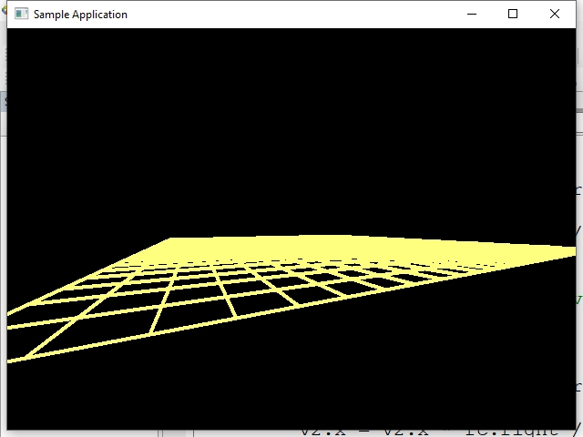

Загрузить архив с примерами ЗДЕСЬ.
После умножения вершин модели на матрицу вида, координаты модели перемещаются с мирового пространства в пространство вида. В пространстве вида камера имеет координаты (0,0,0), и если после умножения на матрицу вида модель имеет положительные координаты Z - значит она видна зрителю. Если модель имеет отрицательные координаты Z она выводится на экран с искажениями. Поэтому нужно отсекать все вершины модели которые имеют отрицательную координату Z.
К примеру у нас есть линия с двумя точками v1 и v2 (или ребро треугольника). Если v2 находится за передней плоскостью, т.е. имеет отрицательную координату Z, а v1 находится перед передней плоскостью, т.е. имеет положительную координату Z то такая линия после преобразования в экранные координаты будет выводится с искажениями, т.к. у нее v2 имеет отрицательное значение Z.
Для этого и необходимо отсечение по передней плоскости, что бы у вершин модели в пространстве вида были только положительные координаты, иначе модель выводится с искажениями, если вершины имеют отрицательное значение Z.
Если все вершины модели имеют отрицательное значение Z то мы просто не рисуем модель на экране (модель находится за камерой).
Если v1 перед плоскостью, и v2 за плоскостью, отсечение линии (или ребра треугольника) производится так:
if(v2.z < 0)
{
float d = v1.z / (v1.z - v2.z);
v2.x = (v2.x - v1.x) * d + v1.x;
v2.y = (v2.y - v1.y) * d + v1.y;
v2.z = 0.1f;
}
В этом примере мы будем отсекать по передней плоскости линии.
Код примера можно загрузить /src/03.002-draw_field_winapi/Draw_Field_WinAPI.
После запуска примера перемещатся по сцене можно с помощью клавиш W,S,A,D и поворачивать камеру мышей.
В этом примере матрицу вида возвращает функция камеры Get_View_Matrix(). Вы можете организовать свой класс в приложении который возвращает матрицу вида. Функция Get_View_Matrix() следит на нажатием клавиш клавиатуры W,S,A,D для перемещения по сцене, и следит на перемещением мыши что бы поворачивать обзор камеры, т.е. куда смотрит камера.
После умножения вершины на матрицу вида вершина попадает в видовое пространство. Что такое видовое пространство. К примеру в мировых координатах вершина имеет координаты V(0,0,-15) т.е. по оси Z размещена -15 единиц. К примеру в мировых координатах наша камера имеет позицию (0,0,0) - т.е. находится в начале центра координатной системы и камера смотрит в мировых коорданатах в отрицательную сторону оси Z, те.е -Z. Нормаль в мировых координатах куда смотрит камера N(0,0,-1). Тогда в поле камеры попадает наша вершина (0,0,-15). Но мировых координатах вершина имеет Z=-15 а в пространстве камеры (видовое пространство) вершина еимеет Z = +15. Это мы могли наблюдать когда рассматривали тему Экперименты с матрицей Вида. Т.е. ось Z камеры всегда имеет положительное направления. Все что видит зритель на сцене имеет положительную координату Z в пространстве камеры. Все что имеет Z меньше нуля в видовом пространстве зритель видеть не может.
По этому поводу существует понятие передней проскости отсечения. Все что находится перед передней проскостью отсечения зритель видит и все что зритель видит имеет положительную координату Z. Так организовано отсечение в этом примере. Мы умножаем координаты линий на матрицу вида, и если окажется что у этой координаты Z меньше нуля значит зритель эту координату не видит - необходимо отсечение, что бы правильно нарисовать линию. Поскольку после этого мы как и положено делим на Z (перспективное делений) Z не может быть равно нулю (делить на ноль нельзя), и мы принимаем небольшое число близкое к ную. Z = 0.1f.
//50 линий сетка + еще 2 линий в конце
//одна по горизонтали и одна по вертикали (замыкающие линии)
for ( int i = 0; i < ( 50 + 2 ); i++ )
{
vector3 v1 = vert_buff_transformed[ i * 2 ];
vector3 v2 = vert_buff_transformed[ i * 2 + 1 ];
//линия за передней плоскостью отсечения
if( (v1.z < 0) && (v2.z < 0) )
continue;
//первая вершина за передней плоскостью отсечения
if(v1.z < 0)
{
float d = v2.z / (v2.z - v1.z);
v1.x = (v1.x - v2.x) * d + v2.x;
v1.y = (v1.y - v2.y) * d + v2.y;
v1.z = 0.1f;
}
//вторая вершина за передней плоскостью отсечения
if(v2.z < 0)
{
float d = v1.z / (v1.z - v2.z);
v2.x = (v2.x - v1.x) * d + v1.x;
v2.y = (v2.y - v1.y) * d + v1.y;
v2.z = 0.1f;
}
Дальше в коде перспективное деление (деление Z) и знакомый нам код.
В примере используется отсечение по передней плоскости просмотра. Оно осуществляется следующим способом:

В данном примере проводится только отсечение по передней плоскости просмотра. Отсечение по левому и правому краю экрана не надо - это делает GDI. Отсечение по верхнему краю нам делать на надо, так как с верхним экраном сетка из линий не пересекается.